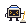
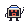
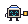
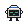
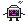
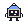
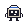
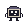
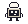
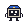

one crewmate, the deckhand, in the five agent states. the face is a terminal screen drawn in the state's colour, and the pose changes with it, but the mood never stands alone: the glyph, the colour and the word sit beside it every time, exactly as Ship's sidebar draws them. static marks use the neutral white face.

busy. pose: swabbing the deck.

waiting on you, like a permission prompt. pose: hand up, asking.

finished while you weren't looking. pose: holding out the finished parcel.

done and seen, or waiting for a prompt. pose: hands behind the head.

something went wrong. pose: smoke coming off the cap.




